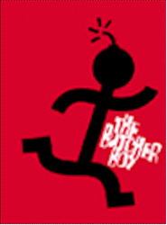
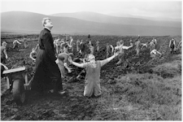
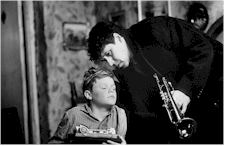

Contents | Features | Reviews | News | Archives | Store |
 |
|
| Movie Credits | Buy It! |
The Butcher Boy
Review by Eddie Cockrell
Posted 1 May 1998
|  | Directed by Neil Jordan Starring
Stephen Rea, Fiona Shaw, Screenplay by Neil Jordan, Patrick McCabe, |
This harrowing, singular new film has been called a cross between François Truffaut's The 400 Blows (1959) and Stanley Kubrick's A Clockwork Orange (1971), combining as it does the initially innocent pleasures of rural childhood with deeper, unstoppable forces that eventually drive an exuberant but ultimately doomed youngster to an act of shocking violence. It is a combustible mixture to be sure, made all the more unstable by the breakneck pace and tornado of Irish slang unleashed by director and co-scenarist Neil Jordan, who is no stranger to dark, risk-taking stories that mix the emotions of childhood and weary cynicism with often surprising results (The Company of Wolves, The Crying Game).
In rural Carn, Ireland, 12-year-old Francie Brady (Eamonn Owens) is bucking some pretty long odds on having anything resembling a normal childhood. His Da (Stephen Rea) is an alcoholic ex-musician, while his Ma (Aisling O'Sullivan) is mentally unstable. What little of the outside world comes through on the Brady's undependable black and white television only increases the tension, with such innocent fare as "The Lone Ranger" full of static but clips of atomic destruction, "The Fugitive" and Nathan Juran's classic sci-fi schlocker The Brain from Planet Arous (1958) coming through just fine. His Uncle Alo (Ian Hart), initially appears to have some influence over the boy but their relationship never gels.
At first a boisterous, cocky bully who terrorizes classmate Phillip Nugent (Andrew Fullerton) in league with best friend Joe (Alan Boyle), Francie's pranks turn increasingly vicious and invites the ire of his young victim's stern-faced mother (Fiona Shaw).
When Ma is institutionalized following a failed suicide attempt, Francie runs away to Dublin — only to find upon his return that Ma has killed herself and the town blames the boy for driving her to it. The hostilities with the Nugents escalate, and Francie is sent to a reform school. Sexually abused there by Father Sullivan (Milo O'Shea), he also begins to have visions of the Virgin Mary (Sinead O'Connor), whose soothing visits he describes to the old priest during the abuse.
Returning to Carn, Francie is put to work at the local butchers. While he continues to be relentlessly cheerful in public, his maliciousness towards the Nugents increases while his father dies of Tuberculosis in the living room and the Cuban Missile Crisis plays itself out on radio and television. Finally, the boy snaps and brutally kills Mrs. Nugent in her own home, smearing her blood on the walls and fleeing. Captured and incarcerated in a mental institution, he is released many years later and immediately has another vision of the Virgin Mary.
What makes The Butcher Boy almost hypnotically watchable are the elaborate visual constructs Francie makes from television clips of nuclear holocaust, the visions of Our Lady and the surreal images of pigs (what Mrs. Nugent contemptuously calls the entire Brady clan). The entire narrative is also fuelled by a supercharged, slang-ridden, darkly funny narration read from Francie's point of view by Rea (who, absurdly, plays the boy briefly at the very end of the film).
In Eamonn Owens, Jordan has found a brazen, cocksure, ingratiating youngster who cements the links to Truffaut's Antoine Doinel (Jean-Pierre Leaud) and Kubrick's Alex (Malcolm McDowell). His eyes merry, his face split by a fleshy, devil-may-care grin, Owens brings an energy to the role that is at first heartbreakingly innocent, then astonishing in its heartlessness. Long-time Jordan collaborator Rea is fine as the nearly catatonically drunk Da, and Sullivan, who worked with Jordan in Michael Collins and is also in "Cracker," brings a troubled frailty to Ma. Fiona Shaw conjures up no less of a disapproving presence than Margaret Hamilton as Mrs. Nugent (and is soon to be seen in the remake of The Avengers), and veteran character actor O'Shea is chillingly effective as the priest who must dress Francie up in a bonnet and urge him to recite his visions. The terrific Hart scores as a tantalizingly normal enigma but is given precious little to do.
Jordan seems more focused and content making personal, independent movies like Mona Lisa (1986), The Miracle (1990), The Crying Game (1992) and The Butcher Boy than such forced studio hi-jinks as High Spirits (1987), We're No Angels (1988) and Interview with the Vampire (1994). Even his most conventional film, the obviously personal but unwieldy Michael Collins (1996), feels more like an obligation than a labor of love.
The director's excitement in The Butcher Boy and his confidence in the material is obvious in the audacious tone of the film (co-written with source novelist Patrick McCabe, seen briefly as the town drunk), which scores Francie's descent to such darkly comic period songs as Santo & Johnny's version of the Weill-Brecht composition "Mack the Knife," Dion & The Belmonts' "No One Knows," Frank Sinatra's "Where Are You," the Kim Fowley-penned rock novelty tune "Nutrocker" (which plays under a frantic scene where Francie is given electroshock therapy) and, of course, the title track, a traditional lament sung for the film by O'Connor.
Tellingly, The Butcher Boy isn't a movie that spends a lot of time pointing fingers at the causes of Francie's downward spiral. And while there's a complete lack of social services, neighbor intervention (except when the police are called) or adult responsibility for Francie's wild child life, Jordan seems more interested in making the audience complicit with the boy's mental deterioration than with condemning a society or a time period. Perhaps this is why the low-profile U.S. release of the film is keyed by a studiously bland poster (a stick-figure with a lit old-time bomb for a head) that is in direct contrast to the sketched youngster with a pig mask, pointed finger and huge butcher knife used elsewhere in the world.
The Butcher Boy succeeds through a spectacular mix of tone, performance and pace; in the same way Kubrick dares us to feel compassion for Alex, Jordan invites us to witness the end of a childhood with the same moral confusion and unnamable panic as his deeply troubled protagonist.
Contents | Features | Reviews | News | Archives | Store
Copyright © 1999 by Nitrate Productions, Inc. All Rights Reserved.